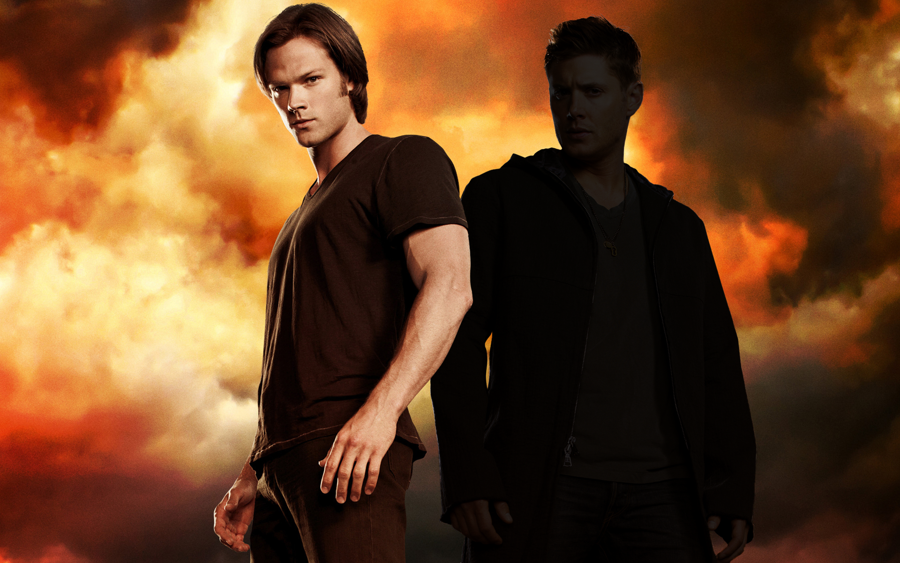

Sam Winchester
Samuel William "Sam" Winchester (b. May 2, 1983) was a hunter as well as a Man of Letters, along with his older brother Dean. He is one of the main protagonists of Supernatural. Both Sam and Dean are related to the Winchester and Campbell families - a Letters family and a Hunting family respectively. The pair also shares a bloodline with Cain and Abel. Because of this, Sam was predestined to be the true vessel of the fallen archangel Lucifer (whilst Dean was Michael's). Sam is friends with angel Castiel, Prophet Kevin Tran, the demon Meg and former lover-turned-enemy of demon Ruby. He is also the occasional reluctant ally of demon Crowley and for a time was forced to be an unknowing and unwilling vessel for the angel Gadreel (before expelling him).
Trivia
- Sam is the only character to appear in every episode of the series, after Dean's absence in Stranger in a Strange Land.
- Sam has killed one major antagonist; Lilith at the end of season 4. He's also killed three secondary antagonists; Jake Talley, Gordon Walker, and Alastair.
- In season 5 Sam defeated main antagonist Lucifer and secondary antagonist Michael by sending them to Hell. He disabled the most Horsemen in the show, neutralizing War and Famine, whereas Castiel incapacitated Pestilence and Dean killed Death. In season 12, he took part in defeating the British Men of Letters.
- Sam can speak basic Spanish as seen in the episode Fallen Idols.
- Sam may still have an unnamed STD given to him by Patrick in the episode The Curious Case of Dean Winchester.
- Soulless Sam served as the secondary antagonist of season 6.